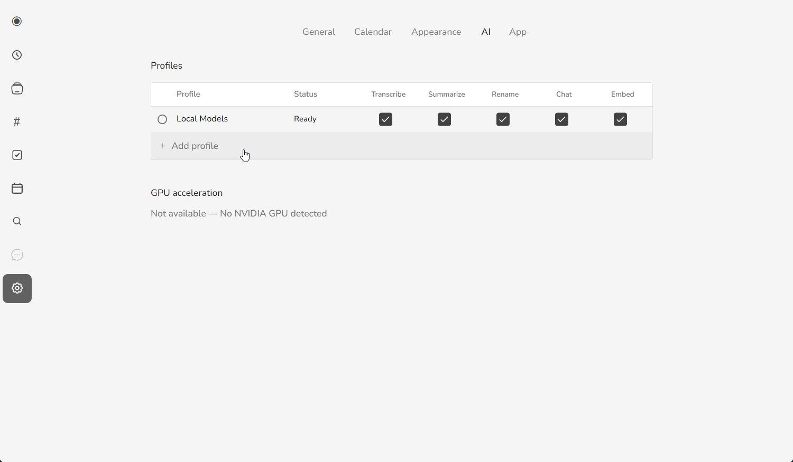
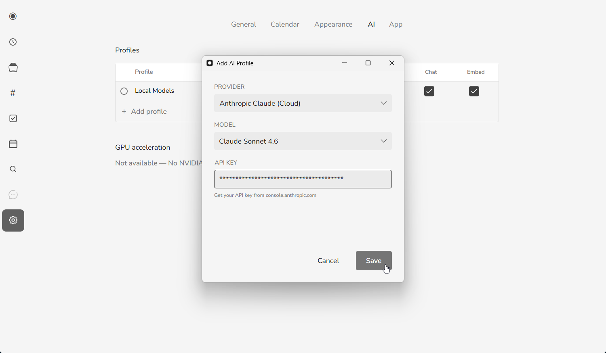
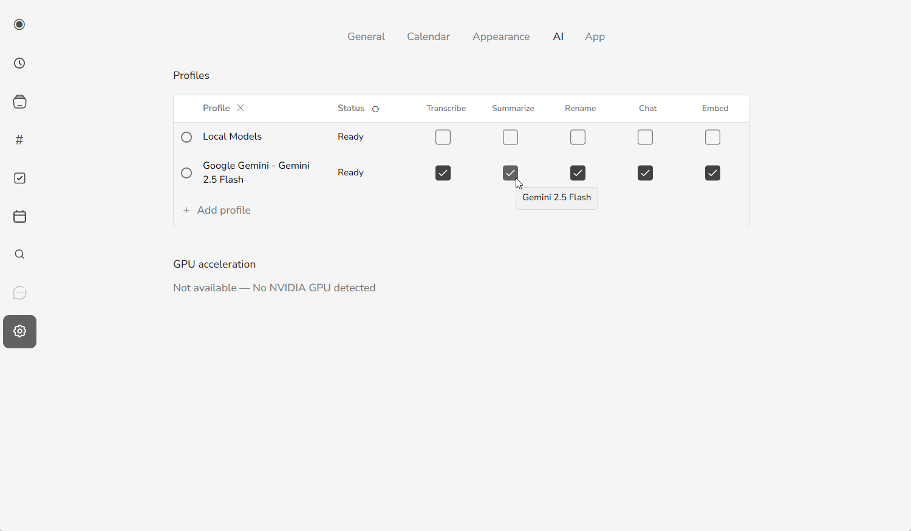

mono runs AI locally by default. Transcription, speaker labels, and summaries all happen on your own computer, and nothing is uploaded. That's the most private option, and it's free. But local AI needs a reasonably capable machine — if mono warned you that your computer may struggle, or transcription feels slow, you can connect a cloud API provider instead and let the heavy work happen in the cloud.
This guide walks through exactly how to do that: where to get an API key, how to add it in mono, which model to pick, what it costs, and how to fix the most common errors.
The short version
- 1. Get an API key from Google Gemini, OpenAI, or Anthropic
- 2. In mono, open Settings → AI
- 3. Click Add profile and pick your provider and model
- 4. Paste your API key and click Save
- 5. Tick the checkboxes (Transcribe, Summarize, Rename, Chat, Embed) to assign those tasks to the new profile
Local vs. API: which should you use?
You don't have to choose permanently — you can switch any time in Settings, and your local models stay installed. Here's the trade-off:
| Local AI (default) | API provider (cloud) |
|---|---|
| Free — no usage costs | Pay-per-use, billed by the provider |
| Fully private — audio never leaves your computer | Audio and text are sent to the provider to process |
| Needs a capable CPU/GPU; can be slow on older machines | Fast on any machine — the work happens in the cloud |
| Works fully offline | Requires an internet connection |
In short: an API provider makes sense when your computer can't run local models smoothly, or when you want the fastest possible results and don't mind sending data to the provider. If privacy is your top priority, stay on local AI.
Step 1 — Get an API key
mono supports three cloud providers. Pick one, create an account, and generate an API key:
- Google Gemini — create a key at Google AI Studio. It has a generous free tier, which makes it the easiest place to start.
- OpenAI — create a key at platform.openai.com. Requires a billing method on file.
- Anthropic Claude — create a key at console.anthropic.com. Requires a billing method on file.

Once the key is created, copy it right away and keep it somewhere safe — most providers only show the full key once.
Keep your key safe. An API key is like a password — anyone with it can spend on your account. mono stores your key on your own computer and only ever sends it to the provider you selected. Don't paste it into chats or screenshots.
Step 2 — Add the profile in mono
Open mono and go to Settings → AI. You'll see a Profiles list — by default it holds a single Local Models profile. The same tab also shows your GPU acceleration status, which is part of why local AI can be slow on machines without a dedicated GPU.

- Click Add profile.
- In the Add AI Profile dialog, choose your Provider: Google Gemini, OpenAI, or Anthropic Claude.
- Pick a Model — the default is a good choice (see choosing a model if you're unsure).
- Paste your API key. The help text under the field links to the right page for your provider.
- Click Save.

mono tests the connection when you save. A green Ready status means the profile works. If you see an error instead, jump to troubleshooting below.
Choose what each profile handles
Each profile row has five columns — Transcribe, Summarize, Rename, Chat, and Embed. Every task is handled by one profile, so ticking a box for your new cloud profile hands that task to it. You don't have to move everything: a common setup is to keep Transcribe on Local Models for privacy while sending Summarize and Chat to the faster cloud profile.

Choosing a model
Each provider offers several models. For meeting transcription and summaries you almost never need the largest, most expensive one — the fast, low-cost models handle it well and cost a fraction as much. Good defaults:
| Provider | Start here (fast & cheap) | Higher quality |
|---|---|---|
| Google Gemini | Gemini 2.5 Flash | Gemini 2.5 Flash (Lite for lowest cost) |
| OpenAI | GPT-4.1 Mini | GPT-4.1 |
| Anthropic | Claude Haiku 4.5 | Claude Sonnet 4.6 |
Need something newer or experimental? Choose Custom… in the model list and type the exact model name. You can also set max output tokens there — use a higher value for transcription (e.g. 65536) and a lower one for chat (e.g. 8192).
What it costs
With an API provider you pay the provider directly for what you use — mono doesn't add any markup. Costs depend on the model and how much you transcribe, but the fast models are inexpensive: a typical hour-long meeting costs only a few cents to transcribe and summarise on the smaller models. Two things keep your bill low:
- Start with Gemini's free tier to try the workflow at no cost.
- Stick to the fast models (Flash, Mini, Haiku) unless you have a specific reason to upgrade.
You can always check live pricing on each provider's website, and set spending limits in your provider account for peace of mind.
Troubleshooting
If saving a profile shows an error, here's what it usually means and how to fix it:
| Message | What to do |
|---|---|
| Invalid API key | The key is wrong or expired. Copy it again from the provider (no extra spaces) and click Reconnect. |
| API key is required | The key field is empty. Paste your key and save again. |
| Quota exceeded | Your provider quota or credit is used up. Check billing in your provider account, or wait for the quota to reset. |
| Rate limited | Too many requests too quickly. Wait a few minutes and try again. |
| Model not found | The model isn't available on your account. Pick a different model, or check a custom model name for typos. |
| Network error / timed out | mono couldn't reach the provider. Check your internet connection and try again. |
Switching back or between providers
Nothing is locked in. Under Settings → AI you can add several profiles, switch the active one, or go back to local AI at any time — your downloaded local models stay installed and ready. A common setup is to keep local AI for sensitive recordings and an API provider for when you want speed.
FAQ
Is my data still private if I use an API provider?
Partly. With local AI (the default), audio never leaves your computer. With an API provider, the audio and text needed for transcription and summaries are sent to that provider — Google, OpenAI, or Anthropic — to process. mono keeps your key local and only contacts the provider you chose. If privacy is your priority, use local AI.
Do I still need mono's local models?
No. With an API provider set up, you can transcribe and summarise without the local models. You can also keep both and switch between them whenever you like.
Does it work offline?
No — API providers run in the cloud, so they need an internet connection. Local AI is the option that works fully offline.
Which provider should I pick?
If you're unsure, start with Google Gemini and the free tier. All three providers work well; the fast models (Flash, Mini, Haiku) are more than enough for meetings.